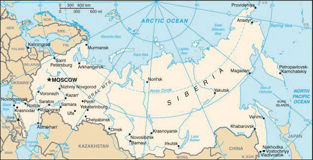
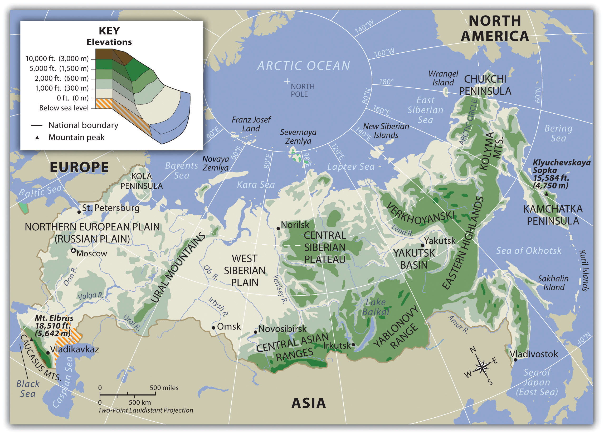
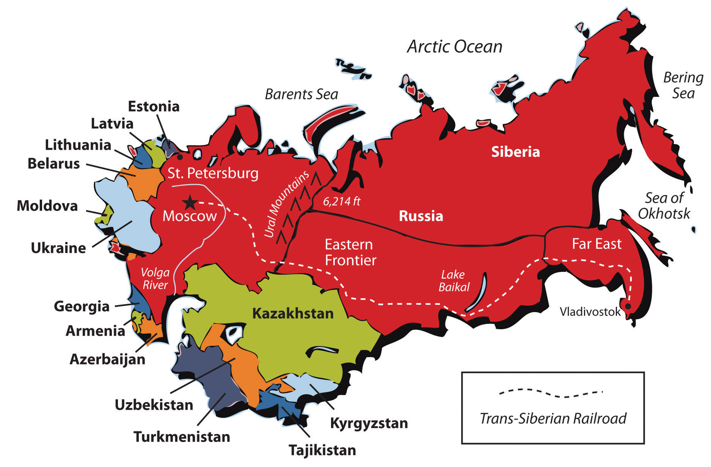
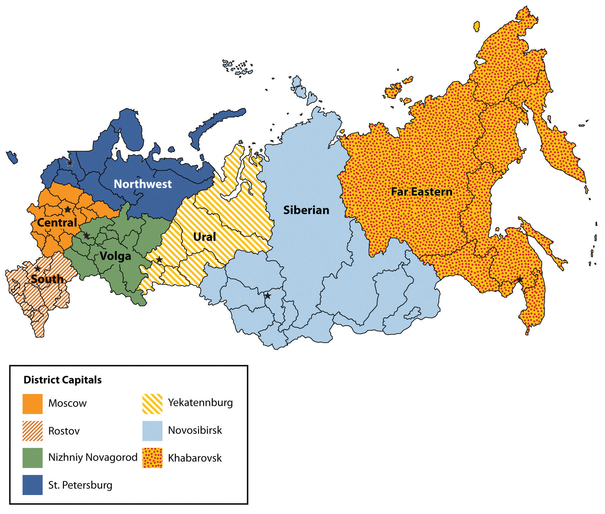

Russia is the largest country in physical area—almost twice the size of the United States. The country extends from its European core, where most of the population live, across the Ural Mountains into Siberia and the Russian Far East, where residents have more economic and social connections with China than with Europe. A train journey from St. Petersburg to Vladivostok, the western and eastern termini of the Trans-Siberian Railway, takes about one week of constant travel. No paved highways cross the entire country. The main part of Russia is so big that it requires eight time zones, with an additional time zone for the European enclave of Kaliningrad, near Poland. Russia includes world-class cities such as Moscow, with its many billionaires and famous Red Square; vast territories of the Arctic north; immense forests of Siberia; grain farms rivaling those in Kansas; and mountain communities in the Caucasus. Russia has a complicated history of monarchy and totalitarianism, rich natural resources, extremes of wealth and poverty, and a slowly declining population. It is a dynamic country transitioning from a Communist state to part of the global economy.
Figure 3.1 Map of Russia
Source: Map courtesy of the CIA World Factbook.
Russia is located in both Europe and Asia. The Ural Mountains are considered the separation boundary for the two continents. The Asian side of Russia is physically bordered to the south by Kazakhstan, Mongolia, and China, with an extremely short border shared with the tip of North Korea. The Amur River creates a portion of the boundary with China. The Pacific Ocean is to the east with the Bering Strait separating Russia from North America. The Arctic Ocean creates the entire northern boundary of Russia stretching all the way from Norway to Alaska. The Arctic Ocean can be ice covered for much of the long winter season. Russia is a northern country with the majority of its physical area above the latitude of 50 degrees north. The Arctic Circle runs the entire length through the middle of the northern half of the country.
The boundaries of European Russian include its southern border in the Caucasus Mountains with Georgia and Azerbaijan. This portion of Russia protrudes south of 50 degrees latitude. The Caucasus Mountains are the tallest mountain chain in Russia and Europe. The Black Sea and the Caspian Sea create natural boundaries on either side of the Caucasus Mountains. The main borders with Eastern Europe include the large countries of Ukraine and Belarus. Farther north, Russia borders Latvia, Estonia, Finland, and Norway. European Russia is much smaller than its Asian counterpart but is the dominant core area for the country anchored by the capital city of Moscow.
The massive expanse of Russia exhibits a variety of physical environments, such as tundras, steppes, mountains, and birch forests. Type D (continental) climatesClimate found in places far from oceans, with extremes of summer and winter temperatures and moderate precipitation. dominate most of the country and characterize large landmasses such as Eurasia and North America. Land in the center of a large continent, far from the moderating effects of oceans, tends to heat up rapidly in the summer and cool down rapidly in the winter. These areas are known for hot summers and cold, harsh winters. Northern Russia borders the Arctic Ocean, and frigid air masses from the Arctic swoop south across Russia each winter. Moreover, Russia’s northerly latitude means that it experiences a short growing season and has never been an agricultural superpower; the country usually has to import grain to feed its people. Mountain ranges to the south block summer rains and warm air masses that would otherwise come from South and Central Asia, thus creating deserts and steppes in southern Russia.
Most of Russia’s population live in the European part of the country on the Eastern European Plain, also known as the Western Russian Plain, or the Russian Plain, the most agriculturally productive land in Russia. The eastern edge of the plain is marked by the Ural Mountains, a low-lying mountain chain (about 6,000 feet) that crosses Russia from the Arctic Ocean to Kazakhstan. The mountains contain deposits of coal, iron ore, and precious and semiprecious stones and are considered the boundary between Europe and Asia. To the south of the Russian Plain is another mountain range, the Caucasus Mountains, which bridges the gap between the Caspian and Black Seas. East of the Urals are the West Siberian Plain, the Central Siberian Plateau, the Yakutsk Basin, the Eastern Highlands, and the Central Asian Ranges. Russia has rich natural resources, such as petroleum, natural gas, and forest products.
Figure 3.2 Physical Regions of Russia
The territory that makes up the Russian FederationThe name for Russia after the 1991 collapse of the Soviet Union. was gradually conquered by the Russian EmpireA state ruled by czars that ended in 1917 with the assassination of the royal family. as the country expanded from its political core around Moscow/St. Petersburg during the sixteenth through the nineteenth centuries. By the end of the eighteenth century, Czarina Catherine the Great had expanded Russia to include the area that is now Ukraine (the north side of the Black Sea), the northern Caucasus Mountains, and Alaska (which Russia later sold to the United States). During the next century, the Russian Empire expanded eastward into Central Asia (what is now Kazakhstan, Uzbekistan, and the other Central Asian republics), southward into the rest of the Caucasus region, and westward into Poland and Finland. In the twentieth century, when the Russian Empire disintegrated and was replaced by the Soviet UnionAlso called the Union of Soviet Socialist Republics (USSR), a country created in 1922, after the Russian Empire and the Russian Civil War and dissolved in 1991. (the Union of Soviet Socialist Republics or USSR), the central government continued to expand and strengthen its control of the vast area from Eastern Europe to the Pacific Ocean.
Both the Russian Empire and the Soviet Union were imperialWhen a central state forcibly rules territory inhabited by people of different ethnicities, languages, or religions. powers. In other words, these governments ruled a large variety of ethnic groups in distant places: people who spoke many languages, people who worshiped different gods in different ways, people who had various skin and hair colors, and people who did not consider themselves to be Russian. Although the British and some other European powers had an arguably more difficult task of ruling empires that were widely scattered around the world, Russia had the largest empire in terms of territory. Ruling this diverse, immense empire was an incredible challenge.
The czars ruled this empire with RussificationThe Russian government’s quest to teach the Russian language and Russian religion to encourage non-Russian citizens to become more culturally Russian. and the sword. Russification refers to the attempt to minimize cultural differences and turn all Russian subjects into Russians, or at least to make them as Russian as possible. As they were all subject to the Russian czars, people were taught the Russian language and were encouraged to convert to Russian OrthodoxyThe doctrines and tenets of the Russian Orthodox Church. . Russification was not very successful, and the farther people were from Moscow the less likely they were to be Russified. When the Soviets took over the Russian Empire, millions of Muslims still lived in Central Asia, on the Crimean peninsula of southern Ukraine, in the Caucasus Mountains, and elsewhere.
The Soviets took a different tack when it came to taming the diversity of the empire. Instead of emphasizing unity under the Russian czar, the Russian language, and the Russian Orthodox religion, the Soviets decided to organize—and thus try to control—the diversity of ethnic groups found in the Soviet Union. They chose some of the major groups (Uzbek, Kazakh, and so forth) and established Soviet Socialist RepublicsThe “states” within the Soviet Union. that corresponded to these major groups. Thus they created the Uzbek Soviet Socialist Republic (Uzbek SSR), the Kazakh Soviet Socialist Republic (Kazakh SSR), the Ukrainian Soviet Socialist Republic (Ukrainian SSR), and a different republic for each of fourteen ethnic groups, plus the Russian Soviet Federative Socialist Republic. About eighty-five other ethnic groups were not given their own republics, although some of them were allocated regions within the Russian Republic. In theory, each of the Soviet Socialist Republics was an independent state choosing to ally with the Soviet Union. In practice, of course, these republics were part of a totalitarian, centrally ruled state with far fewer autonomous rights than states in the United States.
Figure 3.3 Former Soviet Union
The creation of these republics strengthened certain ethnic/national identities and weakened others. There had not been a fully developed Uzbek national identity before the formation of the Uzbek SSR. The same was true for the Kazakh SSR, the Turkmen SSR, and others. Although people in a certain area might have spoken the same language, they did not think of themselves as belonging to a nation of fellow Uzbeks, Kazakhs, or Turkmen until they were put into one by the Soviet rulers. In 1991, when the Soviet Union collapsed, these Soviet Socialist Republics were able to declare their independence from Russia, and the national identities fostered during the Soviet era came to fruition.
At the same time that the Soviets were organizing minority ethnic groups into republics, they were also sending ethnic Russians to live in non-Russian parts of the Soviet Union. Some were sent by force—such as Russians who were sent to prison camps in Siberia and stayed in the area after they were eventually freed. Other Russians were sent around the empire to work in factories, power plants, and other industries, or they were sent to help administer the government. By sending Russians to the far reaches of the Soviet Union, the Russian government hoped to consolidate its control over the various republics and to dilute the strength of the minority ethnicities. This policy also had unintended consequences: when the Soviet Union collapsed after 1991 and the various republics became independent countries, they each had to deal with sizable Russian minorities. For example, at the time of its independence, nearly as many ethnic Russians lived in Kazakhstan (38 percent) as ethnic Kazakhs (40 percent). In the twenty years since then, many Russians moved to Russia from the former Soviet republics. In 2010, Kazakhstan’s population was only about 24 percent ethnic Russian.“Demography of the Soviet Union,” Wikipedia, http://en.wikipedia.org/wiki/Demography_of_the_Soviet_Union; “The World Factbook,” Central Intelligence Agency, https://www.cia.gov/library/publications/the-world-factbook/geos/xx.html.
Figure 3.4 New Russian Federal Districts
Source: Updated from map courtesy of selbst erstellt, http://commons.wikimedia.org/wiki/File:Map_of_Russian_subjects_recent.svg.
The Russian federation was created with eighty-three federal subjects: two autonomous federal cities; forty-six provinces (oblasts) and nine territories (krais) that function in the same way and are the most common type of federal unit; twenty-one republics; four autonomous districts (okrugs); and one autonomous oblast. Moscow and St. Petersburg are the two federal cities that function as their own units. The oblasts and krais each have a governor appointed by the central government and a locally elected legislature. The governorship was an elected position in the 1990s, but President Vladimir Putin changed the structure to strengthen the power of the central state. The republics, designed to be home to certain ethnic minorities, are allowed to have their own constitutions and governments and to select an official language that will be used besides Russian, but they are not considered independent countries with the right to secession. The autonomous districts were also formed for ethnic minorities and are administered either by the central state or by the province or territory in which they are located. The only autonomous oblast was created in the 1930s to be a home for Jews in the Russian Far East, but only about 1 percent of the population remains Jewish today.
Each region of the Russian republic has its own environmental issues. The core region surrounding Moscow, with all its industrial activity and large urban expanses, introduces sewage and chemicals to the country’s waterways, contributing to serious water pollution. The same water pollution is found east of the Ural Mountains—and in the waterways in that region—because of the industrial cities found there. Moscow and the ring of industrial cities surrounding it have seen a dramatic increase in automobile use since 1991, contributing to air pollution. Russia is blessed with abundant natural resources, but significant environmental damage has been the price of exploiting and extracting those resources. Massive oil spills have occurred in the taiga and tundra areas, where the lack of safety management has increased environmental damage during oil exploration and development. The taiga is the large expanse of evergreen or boreal forests in the north just south of the tundra in North America, Europe, and Asia. The taiga is most common in type D climates and is one of the largest biomes on earth. The taiga is the largest biome in Russia. Mining and smelting processes in Siberian cities have added to the region’s air and water pollution. These ecosystems are rather fragile and will take years to recover from such damage.
Water pollution from the rivers extends into the Black Sea, the Caspian Sea, and other bodies of water. Lake Baikal, described as the largest freshwater lake in the world, was at one time pristine, but pollutants have entered its waters from nearby industrial activity. Increased pollution in the Black and Caspian Seas, as well as overfishing, the lack of fishing regulations, and the lack of law enforcement, has resulted in the devastation of fish populations such as the caviar-producing sturgeon. The Arctic waters of the Barents Sea off the northern coast of Russia have been a dumping ground for nuclear waste products and expended nuclear reactors from naval vessels. The consequences of this nuclear pollution are not widely known or studied. Many additional aging nuclear reactors from the Soviet era dot the landscape, and they will need to be decommissioned at some point, adding to the nuclear waste issues. Various regions in Siberia were used for nuclear testing and are also contaminated with nuclear radiation.
Identify the following key places on a map:
As we learned in Section 3.1 "Introducing the Realm", the Russian Empire was built by the czars over the course of a few hundred years. However, the economic and political systems of the Russian Empire were not sustainable in the modern era. The vast majority of the population were poor, and most were landless peasant farmers—and in a place with short growing seasons, farming was not an easy path to riches. Political decisions were made by a very small elite group. At the dawn of the twentieth century, one hundred years after the Industrial Revolution swept through Great Britain and Western Europe, Russia remained an agricultural country and had not yet begun large-scale industrialization. Outside of the aristocracy, few supported the status quo in Russia, and there was widespread desire for a new political system and government.
However, no one could agree on what a new government would look like. In the aftermath of the First World War, a civil war erupted in Russia. During these chaotic times, the last czar, Nicholas II, was forced from office, and he and his family were executed. The most powerful group battling for control of Russia was a Communist group called the BolsheviksThe political group, led by Vladimir Lenin, that won the civil war in Russia (1917–23) and took control of the new USSR., which literally meant the “larger group.” Other groups, including the “smaller group,” the Mensheviks, lost the civil war. The Bolshevik leader was Vladimir Lenin, and in 1917 he and his supporters embarked on a quest to turn Russia into a Communist state.
The capital city was moved back to Moscow from St. Petersburg, where it had been since the time of Czar Peter the Great in the eighteenth century. St. Petersburg’s name was changed to Petrograd and then Leningrad in honor of Vladimir Lenin, as the atheist Soviets did not want any references to Christian saints. The entire territory of the Russian Empire was turned into the Union of Soviet Socialist Republics (USSR). The Russian people traded a monarchy for a Marxist totalitarian state (see the explanation of Marxism in Section 3.2.1 "Marxist-Leninist Central Planning").
Figure 3.5 Vladimir Lenin and Josef Stalin, 1922

The Soviet Union lasted from 1922 to 1991. Josef Stalin, the Soviet dictator who took over after Lenin, was incapacitated in 1922 (and died in 1924). He was a ruthless leader who murdered his way to power and killed or exiled anyone who got in his way. Stalin is famous for initiating economic plans that helped move Russia from a poor, agrarian state to a large, industrial superpower. He pushed for rapid industrialization, the eradication of family farms in lieu of large communal farms, the end of personal ownership of land or businesses, and the dramatic weakening of organized religion. All these changes came at a great price. During his reign of terror, an estimated thirty million people lost their lives. The forced collectivizationThe process of taking privately owned farms, merging them with other farms and turning them over to government control. This took place in the USSR in the 1930s. of agriculture brought about a devastating famine in 1932–33, in which between six and eight million people starved to death or were killed outright, many of them in Ukraine. Stalin led periodic purges of his perceived political enemies. The largest of these is known as the Great PurgeThe largest of Soviet leader Josef Stalin’s purges of his perceived political enemies. From 1936 to 1938 he had about one million “enemies of the state” executed.. At that time (1936–38), about one million so-called enemies of the state were executed. More people lost their lives under Stalin than in all the concentration camps of Adolf Hitler’s Nazi regime. The full extent of Stalin’s purges of his people may never be fully known. Stalin’s rule ended in 1953, when he reportedly died of natural causes. However, some historians believe he was poisoned by his close associates.
Table 3.1 Soviet Leaders and Russian Presidents
| Soviet Union Leaders | Time as Leader | Life Span |
| Vladimir Ilich Ulyanov (Lenin) | 1917–24d | 1870–1924 |
| Josef Vissarionovich Djugashvili (Stalin) | 1924–53d | 1879?–1953 |
| Nikita Sergeyevich Khrushchev | 1953–64 | 1894–1971 |
| Leonid Ilyich Brezhnev | 1964–82d | 1906–1982 |
| Yuri Vladimirovich Andropov | 1982–84d | 1914–84 |
| Konstantin Ustinovich Chernenko | 1984–85d | 1911–85 |
| Mikhail Sergeyevich Gorbachev | 1985–91 | 1931– |
| Russian Federation presidents (1991+) | ||
| Boris Nikolayevich Yeltsin | 1991–99 | 1931–2007 |
| Vladimir Vladimirovich Putin | 2000–2008 | 1952– |
| Dmitry Anatolyevich Medvedev | 2008– | 1965– |
| d = died while in office | ||
|---|---|---|
The Soviet Union espoused the philosophies of Karl Marx, a nineteenth-century German theorist. Marx wrote that all political and economic life can be understood as a struggle between the various classes in society. People who adhere to Marx’s philosophy are called Marxists, and the Soviet version of Marxism is called Marxism-Leninism. In Marxist thought, capitalismAn economy based on the free market. is an oppressive economic system in which the working class (the proletariatIn Marxist theory, the working class of society.) is oppressed by the bourgeoisieThe wealthy middle class of a capitalist society. (the wealthy middle class). Marxists believe that the proletariat should revolt, rise up against the bourgeoisie, take the property away from the rich, and give it to the government to control it for the benefit of the common people. Ultimately, a pure CommunistIn theory, a system in which there are no economic classes and economic resources are shared equally by all members of society. In practice, this term describes socialist countries such as the USSR. system would result, with no social or economic classes, no private property, no rich people, and no poor people. In real life, governments that adopt these ideas practice socialismAn economic and political practice in which the government owns the means of economic production, distribution, and exchange. Socialism is thought to be a step on the path to Communism. and are said to be socialist.
As a socialist state, the Soviet Union did not include open markets. The Soviet Union was a command economyAn economy in which economic decisions are made by a central authority and not according to market demands., in which economic decisions were made by the state and not left to the market to decide. During the Soviet era, for example, industrial production was planned by the central government. The government would decide what would be produced, where it would be produced, the quantity produced, the number of workers who would produce it, where the raw materials would come from, and how the final product would be distributed. By mobilizing the entire country to work toward common goals, the USSR was able to achieve the rapid industrialization that it so desired. However, the Soviets underestimated the power and efficiency of free-enterprise capitalism, and their socialist system was undermined by waste, fraud, and corruption.
Another main economic feature of the Soviet Union was collectivized agriculture. The Soviet leaders did not want individual, capitalist farmers to become rich and threaten their economic system. Nor did they want thousands of small, inefficient farms when the country was perpetually unable to feed itself. Instead, they decided to streamline agricultural production into large farm factories. All the farmland in each area was consolidated into a government-owned collective operation. Some collective farms were run by the state, while others were run by private cooperatives. During the transition period to collective farming, individual farmers were forced to give up their land, animals, farm equipment, and farm buildings and donate them to the collective farm in their area. The state also demanded a high percentage of the crops produced. At times, the government collected the entire harvest, not even allowing seed crops to be held for the following season. This brought about widespread famine in 1932–33. Collectivized agriculture remained the norm in the Soviet Union until the country’s dissolution in 1991 and even afterward in some areas.
From the end of World War II in 1945 until the collapse of the USSR in 1991, the Soviet Union and the United States competed in the global community for the control of labor, resources, and world power. Each side attracted allies, and most countries were on the side of either the United States or the Soviet Union; very few remained neutral. This era, known as the Cold WarThe protracted competition for military strength, scientific prowess, economic growth, and control of resources between the United States and the Soviet Union and their respective allies from 1945 to 1991., did not involve direct military armed conflict between the United States and the Soviet Union, but it transformed the world into a political chessboard, with each side wanting to block the other side from gaining ground. Whenever the Soviets would enter into an alliance with a certain country, the United States was right there to try to counter the move. Wars, armed conflicts, sabotage, spying, and covert activities were the methods of the Cold War. Both sides stockpiled as much deadly weaponry as possible, including nuclear warheads and missiles. They also competed in the race to put people in outer space.
Figure 3.6 October Revolution Celebration 1983, Moscow, during the Cold War

Source: Photo courtesy of Thomas Hedden, http://commons.wikimedia.org/wiki/File:October_Revolution_celebration_1983.png.
The Cold War led to wars fought in Vietnam, Korea, Grenada, Afghanistan, Angola, and the Middle East, with the Soviet Union funding one side and the United States supplying the other. Covert wars or guerilla wars with secret agents and political assassinations were fought in Cuba, Nicaragua, Chile, Guatemala, Mozambique, Laos, Cambodia, and a host of other third-world countries. The Cold War divided the world into two main camps, each with a high number of nuclear weapons. Eastern Europe was sectioned off by the Iron Curtain, and the Berlin Wall divided the city of Berlin, Germany. These physical barriers divided the communist countries of Eastern Europe with the capitalist democracies of Western Europe. Germany itself was divided into two separate countries, as explained in Chapter 2 "Europe".
Various Soviet dictators came to power and died in office before the end of the Cold War. The last Soviet leader was Mikhail Gorbachev, who assumed power in 1985. The US president at the time was Ronald Reagan. During the 1980s the United States was outspending the Soviets militarily, and its economy was growing at a much faster rate than that of the USSR. At the same time, the Soviets were engaged in a costly war in Afghanistan, and their economy was faltering and in danger of collapse. Gorbachev realized that reforms had to be implemented to modernize the Soviet system: political life needed to be more open so that people would feel ownership of the country, and the economy needed to be restructured. Gorbachev implemented perestroikaThe Russian word for “restructuring”; a campaign carried out by Soviet leader Mikhail Gorbachev in the 1980s to add market components to the Soviet economy. (restructuring of the economy with market-like reforms) and glasnostRussian word for “openness”; a program to foster political transparency and openness carried out by Soviet leader Mikhail Gorbachev in the 1980s. (openness and transparency of all government activities). The restructuring exposed fundamental problems in the economy, and by 1990 the Soviet economy was in worse shape than ever before.
Figure 3.7

The first McDonald’s restaurant in the former Soviet Union was in Moscow, Russia.
Source: Photo courtesy of Mary Krueger.
The end came in 1991: the Soviet Union collapsed when fourteen of the Soviet republics broke away and declared their independence. At this point, the Soviet state was too weak to prevent it. All the republics, including Russia itself (now called the Russian Federation), became independent countries. The only territories that did not achieve independence were the smaller republics and autonomous regions that existed within the Russian Federation’s boundaries. The Iron Curtain melted away seemingly overnight, and people were free to travel to and from the former Communist countries. The old Russian flag flew over the KremlinThe seat of the Soviet, and then Russian, government. The Russian word for a fortress or walled city, the Kremlin is the ancient fortress in Moscow.—the seat of the Russian government—for the first time since Czar Nicholas II had been in power seventy-three years earlier. The Communist era of the Soviet Union and the Cold War were over.
Figure 3.8 Walls of the Kremlin in Moscow

Kremlin is a Russian word for a walled city. Inside Moscow’s Kremlin is the famous Red Square.
Source: Photo courtesy of Mary Krueger.
The post-Soviet transition was filled with political, economic, and social turmoil. Boris Yeltsin, the first president of the new Russian Federation, ushered in a series of economic reforms that privatized state-owned enterprises. Russian leaders tried to reverse socialism rapidly through what they called “shock therapyThe process of rapid privatization and the move to market capitalism after the Soviet Union’s collapse.,” which they knew would be painful but hoped would be brief. These reforms created a new class of capitalist entrepreneurs.
Wealth, once controlled by the political elite, was now being shifted to the business elite, a pattern found in most capitalist countries. Many ordinary workers faced unemployment for the first time as the new owners of various companies trimmed unnecessary staff. Private ownership forced housing costs to skyrocket, and while families were generally allowed to keep the homes they already lived in, purchasing houses or condominiums became out of reach for many people. The value of the ruble, Russia’s currency, declined rapidly, and older people watched as their life savings evaporated overnight. Western goods were more easily accessible, and all kinds of consumer products became much more widely available than they were during the Soviet era. Bread lines and empty store shelves became distant memories as the former Communist state shifted over to a type of capitalist democracy. Yeltsin became increasingly less popular as citizens became dissatisfied with corruption and the high social costs of the post-Soviet transition. He resigned in 1999 and was replaced by Vladimir Putin.
The Region’s Early Heritage
Czarist Russia, 1547–1917
Bolshevik Revolution, 1917–22
The Soviet Union (USSR), 1922–91
The Russian Republic, 1991–Present
Figure 3.9 Moscow and the Moskva River

Behind the Borodinsky Bridge on the right are the government buildings of the Russian Federation.
A Russian style of capitalism replaced the social, political, and economic system of the Communist era with a growing market economy. The export of Russia’s vast quantities of natural resources, such as oil, natural gas, and timber, to Europe and the rest of the world helped the country rebound from the economic collapse of the 1990s. Russia has benefited from the recent increase in energy prices, and oil, natural gas, metals, and timber account for more than 80 percent of exports and 30 percent of government revenues. However, Russia still needs to modernize its dilapidated manufacturing base if it is to economically compete against the European Union, North America, or eastern Asia. During Vladimir Putin’s presidency (2000–2008), Russia witnessed substantial economic growth that inspired foreign investors to pump money into the Russian economy and catapulted Moscow into an investment haven and one of the richest cities in the world. In 2008, Moscow claimed to have more billionaires than any other city in the world. Russia has reestablished itself as a major player in the global economy, although much of its population still suffers from poverty and social problems.
Russia’s population grew steadily during the Soviet era, except during periods of famine or warfare, and the country underwent a rural-to-urban shift as farm workers moved to cities to labor in factories. However, when the USSR collapsed, Russia’s population began a steep decline, falling from a peak of 149 million in 1991 to about 143 million in 2005. The trend of low birth rates actually began during the Soviet period. The population decline occurred because birth rates always decline during periods of economic and social crisis as people delay or decide against having children, and the country experienced particularly high death rates because of alcoholism, heart disease, and the collapse of the social safety net. Any time death rates surpass birth rates, a country’s population will decline unless the difference is offset by immigration. Russia’s birth rate was also impacted by very high rates of abortion: in 1992, for example, there were 221 abortions in Russia for every 100 live births.“Historical Abortion Statistics, Russia,” Johnston`s Archive, http://www.johnstonsarchive.net/policy/abortion/ab-russia.html. Although Russia’s population has seemingly bottomed out, the only reason it is not continuing to decline is immigration from the former Soviet republics. Russia still has a negative rate of natural increaseCrude birth rate minus the crude death rate. If it is positive, then the population is growing; if it is negative, then the population is in decline. This does not take immigration into consideration as a component of population change..
To put Russia’s demographic profile in context, its fertility rate was only about 1.5 in 2010, meaning that the average woman would have 1.5 children in her lifetime. This is below the 2.1 children each woman would need to have for the population to remain stable. The fertility rate in Russia is similar to that of countries in Europe (1.5) but lower than that of the United States (2.1).“The World Factbook,” Central Intelligence Agency, https://www.cia.gov/library/publications/the-world-factbook/geos/xx.html. Life expectancy for Russian men is variously reported as sixty years up to sixty-three years, while women can expect to live seventy-three to seventy-five years. In Western Europe, life expectancies are about eighty years.
About 80 percent of Russia’s population is ethnically Russian. The next largest group is Tatar (3.8 percent), a group that traditionally has spoken the Tatar language and practiced Islam. More than 150 ethnic groups are represented in Russia, including indigenous people of the Arctic who herd reindeer for a living. Each of the nationalities of the former Soviet republics has a presence in Russia, and because of its relatively strong economy, Russia (especially Moscow) is an immigration magnet for residents of those countries. Most of these groups have their own language and cultural traditions.
Figure 3.10 The Cathedral of Intercession of the Virgin on the Moat, Also Known as the Cathedral of St. Basil the Blessed, on the Red Square, Moscow

Source: Photo courtesy of Stoljaroff, http://commons.wikimedia.org/wiki/File:Pyh%C3%A4n_Vasilin_katedraali.jpg.
The Russian Orthodox Church is the dominant religious denomination in Russia. For generations, it was the country’s official religion, and Russian people were automatically considered to be Orthodox, no matter what their personal beliefs. During the Soviet era, the government did much to weaken the church, including killing tens of thousands of priests, monks, and nuns and closing most churches. The much smaller church that survived was largely controlled by the state. Because of state-sanctioned atheism during the Soviet era, only 15 to 20 percent of Russia’s population today actively practices Orthodoxy, although a much greater number claim to be Russian Orthodox Christians. Another 15 percent of the country’s population practices Islam, especially in places such as the Caucasus region and the southern Ural Mountains, and about 2 percent practice other forms of Christianity, such as Catholicism and Protestantism.“The World Factbook,” Central Intelligence Agency, https://www.cia.gov/library/publications/the-world-factbook/geos/xx.html. Even though Orthodoxy is practiced by a minority of Russia’s population, the church has increased its influence since 1991 and often acts as an official church. A small percentage of the population are Buddhists, and various ethnic groups in Siberia and the Far East practice tribal religions and pagan rites.
Like English, Russian is an Indo-European language. Russian is on the Slavic branch of the language tree, along with languages such as Polish, Ukrainian, and Serbo-Croatian. A relatively new language, it developed from a language called Old East Slavic that was spoken around 1100 CE. Medieval Russian developed in the thirteenth century, and modern literary Russian is usually traced back to the early nineteenth century. Russian uses the Cyrillic alphabet, which was developed from Greek. The Russian language is the official language of the Russian republic. With over one hundred languages used in the country, twenty-seven of them are officially recognized in various regions within the republic.
Figure 3.11 Apple Keyboard for a Russian Computer

Source: Photo courtesy of Iwan Gabovitch, http://www.flickr.com/photos/qubodup/4611704224.
Identify the following key places on a map:
Most of Russia’s population and its major industries are located west of the Ural Mountains on the Russian Plain. Known as Russia’s geographic core, this includes the Moscow region, the Volga region, and the Ural Mountain region. Moscow, Russia’s capital city, anchors a central industrial area that is home to more than fifty million people. Moscow alone has more than ten million residents, with about thirteen million in its metropolitan area, making it slightly smaller than the Los Angeles, California, metro area. A ring of industrial cities surrounding Moscow contains vital production centers of Russian manufacturing. During the Communist era, Moscow expanded from its nineteenth-century core (although the city dates from at least the twelfth century) and became an industrial city with planned neighborhoods. This world-class city has an extensive subway and freeway system that is expanding to meet current growth demands. Although rents, commodities, and domestic goods had fixed prices during the Communist era, the Soviet Union’s collapse changed all that. Today Moscow is one of the most expensive places to live in the world, with prices based on supply and demand. Many want to live in Moscow, but it is financially out of reach for many Russians.
Russia’s second-largest city, with a population of about five million, is St. Petersburg. Located on the Baltic Sea, it is western Russia’s leading port city. The city was renamed Petrograd (1914–24) and Leningrad (1924–91) but today is often called Petersburg, or just “Peter” for short. Peter the Great built the city with the help of European architects in the early eighteenth century to rival other European capitals, and he made it the capital of the Russian Empire. Named after St. Peter in the Bible (not Peter the Great), it is a cultural center for Russia and a major tourist destination. It is also known for shipbuilding, oil and gas trade, manufacturing, and finance. Its greatest tragedy took place when it was under siege for twenty-nine months by the German military during World War II. About one million civilians died of starvation or during the bombardment, and hundreds of thousands fled the city, leaving the city nearly empty by the end of the siege.
Figure 3.12 Russia’s Core Region

Source: Map courtesy of the CIA World Factbook.
To the far north of St. Petersburg on the Barents Sea are the cities of Murmansk and Arkhangelsk. Murmansk is a major military port for Russia’s navy and nuclear submarine fleet. Relatively warm water from the North Atlantic drift circles around Norway to keep this northern port city fairly free of ice. Arkhangelsk (which literally means “archangel”), used as a port for lumber exports, has a much shorter ice-free season than Murmansk. Both of these cities are in Russia’s far north, with long winters and exceedingly brief summers.
The Volga River flows through the core region of Russia, providing transportation, fresh water, and fishing. The Volga is the longest river in Europe at 2,293 miles, and it drains most of Russia’s western core region. This river has been a vital link in the transportation system of Russia for centuries and connects major industrial centers from the Moscow region to the south through an extensive network of canals and other waterways. The Volga River flows into the Caspian Sea, and a canal links the Volga with the Black Sea through a connecting canal via the Don River.
At the eastern edge of Russia’s European core lie the Ural Mountains, which act as a natural divide between Europe and Asia. These low-lying mountains have an abundance of minerals and fossil fuels, which make the Ural Mountains ideal for industrial development. The natural resources of the Urals and the surrounding area provide raw materials for manufacturing and export. The eastern location kept these resources out of the hands of the Nazis during World War II, and the resources themselves helped in the war effort. Oil and natural gas exploration and development have been extensive across Russia’s core region and have greatly increased Russia’s export profits.
Figure 3.13 Russia’s Eastern Frontier, the Far East, and Siberia

Source: Map courtesy of the CIA World Factbook.
East of the Urals, in south-central Russia, is Russia’s Eastern Frontier, a region of planned cities, industrial plants, and raw-material processing centers. The population is centered in two zones here: the Kuznetsk Basin (or Kuzbas, for short) and the Lake Baikal region.
The Kuzbas is a region of coal, iron ore, and bauxite mining; timber processing; and steel and aluminum production industries. Central industrial cities were created across the Eastern Frontier to take advantage of these resource opportunities. The most important of these is Novosibirsk, the third-largest city in Russia after Moscow and St. Petersburg and home to about 1.4 million people. The city is not only noted for its industries but it is also the region’s center for the arts, music, and theater. It is host to a music conservatory and a philharmonic orchestra, a division of the Russian Academy of Sciences, and three major universities.
Agriculture, timber, and mining are the main economic activities in the eastern Lake Baikal region, which is more sparsely settled than the Kuzbas. Lake Baikal (400 miles long, 50 miles wide) holds more fresh water than all the US Great Lakes together and about 20 percent of all the liquid fresh water on the earth’s surface. Its depth has been recently measured at 5,370 feet (more than a mile). Some of the longest river systems in the world flow through the Eastern Frontier. The Irtysh, Ob, Yenisey, and Lena are the main rivers that flow north through the region into Siberia and on to the Arctic Ocean. To the east, the Amur River creates the border between Russia and China until it flows north into the Sea of Okhotsk. In addition to waterways, the Trans-Siberian RailwayLongest railway line in the world (completed 1916), connecting St. Petersburg in western Russia with Vladivostock in Russia’s Far East. is the major transportation link through the Eastern Frontier, connecting Moscow with the port city of Vladivostok in the Far East.
Siberia, as a place name, actually refers to all of Asian Russia east of the Ural Mountains, including the Eastern Frontier and the Russian Far East. However, in this and some other geography textbooks, the term Siberia more specifically describes only the region north of the Eastern Frontier that extends to the Kamchatka Peninsula. The word Siberia conjures up visions of a cold and isolated place, which is true. Stretching from the northern Ural Mountains to the Bering Strait, Siberia is larger than the entire United States but is home to only about fifteen million people. Its cities are located on strategic rivers with few overland highways connecting them.
Type D (continental) climates dominate the southern portion of this region, and the territory consists mainly of coniferous forests in a biomeLarge geographical region with similar plants and animals because of similar climate and terrain. called the taigaAlso called the boreal forest, a biome of coniferous forest found in cold type D climates.. This is one of the world’s largest taiga regions. Type E (polar) climates can be found north of the taiga along the coast of the Arctic Sea, where the tundraA biome with short growing seasons and colder temperatures usually found in northern latitudes near the Arctic, north of the tree line. is the main physical landscape. No trees grow in the tundra because of the semifrozen ground. PermafrostA layer of permanently frozen soil common in the Russian Arctic. may thaw near the surface during the short summer season but is permanently frozen beneath the surface. On the eastern edge of the continent, the mountainous Kamchatka Peninsula has twenty active volcanoes and more than one hundred inactive volcanoes. It is one of the most active geological regions on the Pacific Rim.
Figure 3.14 Mount Koryasky, an Active Volcano, and Petropavlovsk-Kamchatsky, a Town on Russia’s Kamchatka Peninsula

Source: Photo courtesy of Tatyana Rashidova, http://commons.wikimedia.org/wiki/File:Avacha_volcano_Petropavlovsk-Kamchatsky_oct-2005.jpg.
The vast northern region of Russia is sparsely inhabited but holds enormous quantities of natural resources such as oil, timber, diamonds, natural gas, gold, and silver. There are vast resources in Siberia waiting to be extracted, and this treasure trove will play an important role in Russia’s economic future.
Figure 3.15 Vladivostok Tram Opposite the Admiral’s Club on Its Way to the Railway Station, Vladivostok

Source: Photo courtesy of Oxunhutch, http://en.wikipedia.org/wiki/File:Vladivostok_tram.JPG.
Across the strait from Japan is Russia’s Far East region, with the port of Vladivostok (population about 578,000) as its primary city. Bordering North Korea and China, this Far East region is linked to Moscow by the Trans-Siberian Railway. Before 1991, Vladivostok was closed to outsiders and was an important army and naval base for the Russian military. Goods and raw materials from Siberia and nearby Sakhalin Island were processed here and shipped west by train. Sakhalin Island and its coastal waters have oil and mineral resources. Industrial and business enterprises declined with the collapse of the Soviet Union in 1991. Today, the Far East is finding itself on the periphery of Russia’s hierarchy of productivity. However, it has the potential to emerge again as an important link to the Pacific Rim markets.
In the southern portion of the Russian core lies a land bridge between Europe and Southwest Asia: a region dominated by the Caucasus Mountains. To the west is the Black Sea, and to the east is the landlocked Caspian Sea. The Caucasus Mountains, higher than the European Alps, were formed by the Arabian tectonic plate moving northward into the Eurasian plate. The highest peak is Mt. Elbrus at 18,510 feet. Located on the border between Georgia and Russia, Mt. Elbrus is the highest peak on the European continent as well as the highest peak in Russia.
Most of this region was conquered by the Russian Empire during the nineteenth century and held as part of the Soviet Union in the twentieth. However, only a minority of its population is ethnic Russian, and its people consist of a constellation of at least fifty ethnic groups speaking a variety of languages.
Since the collapse of the Soviet Union, the Caucasus region has been the main location of unrest within Russia. Wars between Russia and groups in the Caucasus have claimed thousands of lives. Some of the non-Russian territories of the Caucasus would like to become independent, but Russia fears an unraveling of its country if their secession is allowed to proceed. To understand why the Russians have fought the independence of places such as Chechnya but did not fight against the independence of other former Soviet states in the Caucasus such as Armenia, it is necessary to study the administrative structure of Russia itself.
Figure 3.16 Republics of Southern Russia, Including Chechnya

Source: Image courtesy of Kbh3rd, http://commons.wikimedia.org/wiki/File:Chechnya_and_Caucasus.png.
Of the twenty-one republics, eight are located in southern Russia in the Caucasus region. One of these, the Chechen Republic (or Chechnya), has never signed the Federation Treaty to join the Russian Federation; in fact, Chechnya proposed independence after the breakup of the Union of Soviet Socialist Republics (USSR). Although other territories to the south of Chechnya, such as Georgia, Armenia, and Azerbaijan, also declared their independence from Russia after 1991, they were never administratively part of Russia. During the Soviet era, those countries were classified as Soviet Socialist Republics, so it was easy for them to become independent countries when all the other republics (e.g., Ukraine, Belarus, and Kazakhstan) did so after 1991. However, Chechnya was administratively part of the USSR with no right to secession. After 1991, Russia decided that it would not allow territories that had been administratively governed by Russia to secede and has fought wars to prevent that from happening. It feared the consequences if all twenty-one republics within the Russian Federation were declared independent countries.
Chechnya has fought against Russia for independence twice since the USSR’s collapse. The First Chechen War (1994–96) ended in a stalemate, and Russia allowed the Chechens to have de facto independence for several years. But in 1999, Russia resumed military action, and by 2009 the war was essentially over and Chechnya was once more under Russia’s control. Between twenty-five thousand and fifty thousand Chechens were killed in the war, and between five thousand and eleven thousand Russian soldiers were also killed.“Second Chechen War,” Wikipedia, http://en.wikipedia.org/wiki/Second_Chechen_War. In 2003, the United Nations called Grozny, Chechnya’s capital, the most destroyed city on Earth. Reconstruction of Grozny has slowly begun.
Even before the recent wars, Chechnya had a difficult past. Over the course of its history, it has been at the boundary between the Ottoman Empire, the Persian Empire, and the Russian Empire. Most of the people converted to Sunni Islam in the 1700s to curry favor with the Ottomans and seek their protection against Russian encroachment. Nevertheless, Chechnya was annexed by the Russian Empire. During Soviet leader Josef Stalin’s reign of terror, more than five hundred thousand Chechens were loaded on train cars and shipped to Kazakhstan, where as many as half died.
The independent countries of Georgia, Armenia, and Azerbaijan make up the region of Transcaucasia. Although they are independent countries, they are included in this chapter because they have more ties to Russia than to the region of Southwest Asia to their south. They have been inextricably connected to Russia ever since they were annexed by the Russian Empire in the late eighteenth and early nineteenth centuries, and they were all former republics within the Soviet Union. When the Soviet Union collapsed in 1991, these three small republics declared independence and separated from the rest of what became Russia.
Geographically, these three countries are located on the border between the European and Asian continents. The Caucasus Mountain range is considered the dividing line. The region known as Transcaucasia is generally designated as the southern portion of the Caucasus Mountain area.
Figure 3.17 Southern Russia and Transcaucasia

Source: Map courtesy of Jeroencommons, http://commons.wikimedia.org/wiki/File:Caucasus-political_en.svg.
The country of Georgia has a long history of ancient kingdoms and a golden age including invasions by the Mongols, Ottomans, Persians, and Russians. For a brief three years—from 1918 to 1921—Georgia was independent. After fighting an unsuccessful war to remain free after the Russian Revolution, Georgia was absorbed into the Soviet Union. Since it declared independence in 1991, the country has struggled to gain a stable footing within the world community. Unrest in the regions of South Ossetia, Abkhazia, and Adjara (where the populations are generally not ethnic Georgian) has destabilized the country, making it more difficult to engage in the global economy. Russia and Georgia had a military conflict in 2008, when Russian troops entered the South Ossetian region to support its move toward independence from Georgia. Georgia considered South Ossetia to be a part of Georgia and called the Russians an occupying force. Many other countries, including the United States, condemned Russia for their action. Russian troops pulled out of Georgia but supported the independence of South Ossetia and Georgia’s westernmost region of Abkhazia. Neither South Ossetia nor Abkhazia are considered independent states by most of the world’s countries.
A democratic-style central government has emerged in Georgia, and economic support has been provided by international aid and foreign investments. The country has made the switch from the old Soviet command economy to a free-market economy. Agricultural products and tourism have been Georgia’s main economic activities.
In 2010, Armenia, to the south of Georgia, had a population of only about three million in a physical area smaller in size than the US state of Maryland. It is a country with its own distinctive alphabet and language and was the first country in the world to adopt Christianity as a state religion, an event traditionally dated to 301 CE. The Armenian Apostolic ChurchThe main religion in Armenia, the church dates to the fourth century CE. remains the country’s central religious institution, and the Old City of Jerusalem in Israel has an Armenian Quarter, an indication of Armenia’s early connection with Christianity.
The small landlocked country has experienced invasions from every empire that controlled the region throughout history. The geographic area of the country decreased when the Ottoman Empire took control of western Armenia, and that region remains a part of Turkey to this day. A bitter conflict between Turks and Armenians during World War I resulted in the systematic deaths of as many as a million Armenians. This genocide continues to be commemorated annually on April 24, the traditional date of the Armenian Martyrs’ Day, but Turkey still denies the events were genocide.
Like the other former Soviet republics, Armenia has shifted from a centrally planned economy to a market economy. Before independence in 1991, Armenia’s economy had a manufacturing sector that provided other Soviet republics with industrial goods in exchange for raw materials and energy. Since then, its manufacturing sector has declined and Armenia has fallen back on agriculture and financial remittances from the approximately eight million Armenians living abroad to support its economy. These remittances, along with international aid and direct foreign investments, have helped stabilize Armenia’s economic situation.
Azerbaijan is an independent country to the east of Armenia bordering the Caspian Sea. It is about the same size in area as the US state of Maine. This former Soviet republic has a population of more than eight million in which more than 90 percent follow Islam. Azerbaijan shares a border with the northern province of Iran, which is also called Azerbaijan. Part of Azerbaijan is located on the western side of Armenia and is separated from the rest of the country.
Located on the shores of the Caspian Sea, Baku is the capital of Azerbaijan and is the largest city in the region, with a population approaching two million. During the Cold War era, it was one of the top five largest cities in the Soviet Union. The long history of this vibrant city and the infusion of oil revenues have given rise to a metropolitan center of activity that has attracted global business interests. Wealth has not been evenly distributed in the country, and at least one-fourth of the population still lives below the poverty line.
Azerbaijan is rich with oil reserves. Petroleum was discovered here in the eighth century, and hand-dug oil wells produced oil as early as the fifteenth century. Since the Industrial Revolution, the rising value of petroleum for energy increased the industrial extraction of oil in Azerbaijan. At the end of the nineteenth century, this small country produced half the oil in the world. Oil and natural gas are the country’s main export products and have been a central focus of its economy. Large oil reserves are located beneath the Caspian Sea, and offshore wells with pipelines to shore have expanded throughout the Caspian Basin. As much as the export of oil and natural gas has been an economic support for the country, it has not been without costs to the environment. According to US government sources, local scientists consider parts of Azerbaijan to be some of the most devastated environmental areas in the world. Serious air, soil, and water pollution exist due to uncontrolled oil spills and the heavy use of chemicals in the agricultural sector.
Figure 3.18 Oil Fields of Azerbaijan

Source: Photo courtesy of Indigoprime, http://commons.wikimedia.org/wiki/File:Azerbaijanoil.jpg.
Identify the following key places on a map: